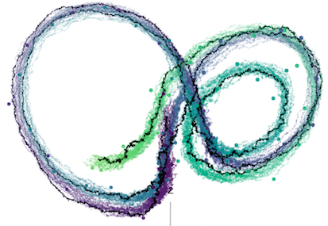

Presentation in the Mannheim Probability and Statistics Seminar. University of Mannheim. Wednesday, 2018-05-09, 12.15-13.00, room A5 C116.
Abstract
Suppose X is a multidimensional diffusion taking values in ℝᵈ with drift b and dispersion coefficient σ, satisfying the stochastic differential equation (SDE)
dXₜ = b(t,Xₜ) dt + σ(t,Xₜ) dWₜ. (1)
The process W is a vector valued process consisting of independent Brownian motions. We assume the process is incompletely observed at times tᵢ and the n observations are given by
Vᵢ = LᵢXtᵢ + ηᵢ,
Here, for i = 0, …, n, Lᵢ is a mᵢ × d-matrix with mᵢ ≤ d. The random variables ηᵢ are independent random variables, independent of the diffusion process X.
Reconstructing the path (Xₜ, t ∈ [0, tₙ]) conditional on V₁, …, Vₙ is known as continuous-discrete smoothing. In case ηᵢ ≡ 0 and Lᵢ = Id (for all i), the problem reduces to sampling independent diffusion bridges. As the transition densities of the diffusion are intractable, we proposed in [1] to simulate diffusion bridge proposals generated from the SDE
dX˚ₜ = b(t,X˚ₜ) dt + q(t,X˚ₜ) dt + σ(t,X˚ₜ) dWₜ, (2)
and subsequently accept/reject these using a Metropolis-algorithm step. The “guiding term” q in (2) is chosen to ensure the process X˚ moves to the location of the observations Vᵢ.
This framework can be extended to the general setting. The resulting algorithm does not assume a Gaussian approximation to the smoothing distribution. From a computational point of view, it can be shown that two backward ordinary differential equations need to be solved once, and at each step of the Metropolis-Hastings algorithm the process X˚ has to be simulated forward. The performance of the proposed algorithm is illustrated using numerical examples (including the Lorenz attractor).
This is joint work with Frank van der Meulen (Technical University Delft) .
[1] M. Schauer, F.H. van der Meulen and J.H. van Zanten. Guided proposals for simulating multi-dimensional diffusion bridges. Bernoulli 23(4A), 2917–2950, 2017.
[2] F.H. van der Meulen and M. Schauer. Bayesian estimation of incompletely observed diffusions. Stochastics, 1–22, 2017.

Figure: Discrete observations and samples from the smoothing distribution for a Lorenz attractor.